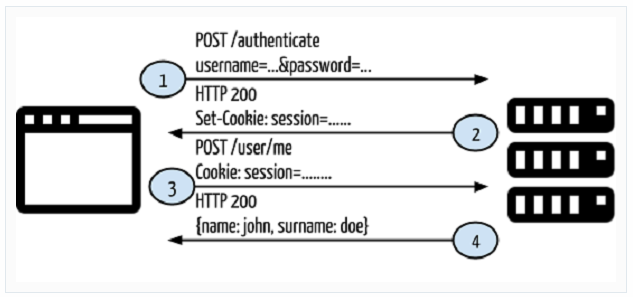
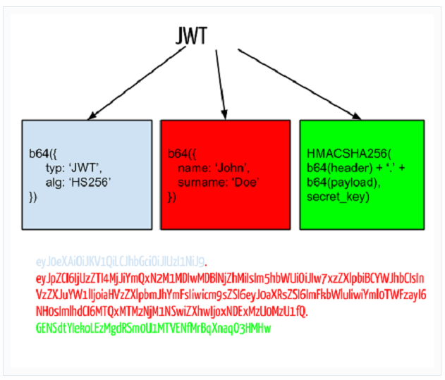
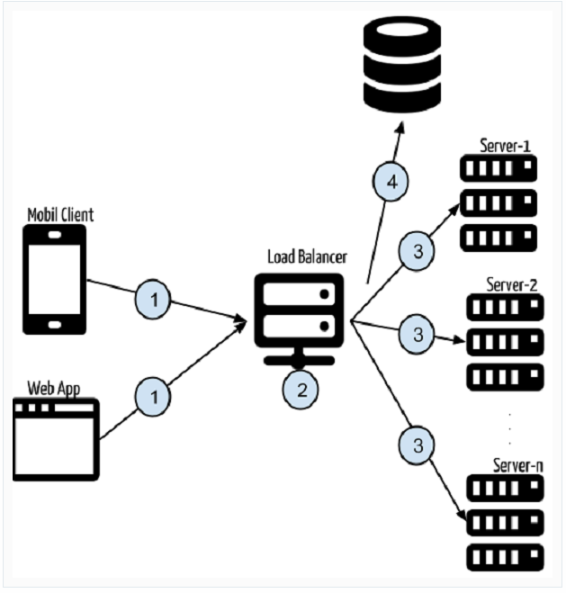

토큰기반 인증 파헤치기(AngularJS & Node.js )
토큰 기반 인증 시스템을 설명하기 전에, 먼저 전통적인 인증 시스템을 살펴보자.

- 사용자는 username과 password를 로그인 폼에 입력하고 Login 버튼을 클릭한다.
- 서버는 요청이 들어오면 DB를 쿼리하여 user를 검증한다. 만약 요청이 유효하면 세션을 생성하고 세션 정보를 Response 헤더에 포함시켜 반환한다.
- 클라이언트는 제한된 end points에 접근할 때 모든 Request Header에 세션 정보를 포함시킨다.
- 만약 세션 정보가 유효하면 서버는 사용자가 특정 end point에 접근하는 것을 허용하고 렌더링된 HTML 내용을 반환한다.
여기까지는 문제가 없다. 웹 어플리케이션은 잘 동작하고, 사용자 인증을 거쳐서 특정 endpoint로의 접근을 제한할 수 있다. 하지만 안드로이드와 같은 다른 클라이언트에서 동작하는 어플리케이션을 만들고 싶다면 어떨까? 전통적인 인증 방식으로 동작하는 어플리케이션을 모바일 클라이언트에서도 동일하게 사용할 수 있을까? 그렇지 않다. 그 이유는 다음과 같다.
- 세션과 쿠키는 모바일 어플리케이션에서 make sense하지 않다. 서버에서 생성된 세션과 쿠키를 모바일 클라이언트에서는 공유할 수 없다.
- 현재 어플리케이션에서 렌더링된 HTML이 반환되었다. 모바일 클라이언트에서는 JSON 또는 XML와 같은 포맷의 응답이 필요하다.
이러한 경우 클라이언트 독립적인 어플리케이션 이 필요하다.
So, what is this JWT?
JWT
JWT는 JSON Web Token의 약자이며 인증 헤더 내에서 사용되는 토큰 포맷이다. 이 토큰은 두 개의 시스템끼리 안전한 방법으로 통신할 수 있도록 설계하는 것을 도와준다. 이 튜토리얼에서는 JWT를 "Bearer 토큰"으로 부르도록 하겠다. Bearer 토큰은 3가지 요소로 구성된다 : Header, Payload, Signature.
Header는 토큰 타입과 암호화 방법을 보관하는 토큰의 한 부분이며, Base-64로 인코딩된다.
Payload에는 유저 정보, 상품 정보 등의 다양한 종류의 정보를 넣을 수 있다. Base-64로 인코딩된다.
Signature는 Header, Payload, Secret key의 조합이다. Secret key는 반드시 서버에 안전하게 보관되어야 한다.
JTW의 장점은 계정 서버와 API 서버가 분리되어 있을 때, API 서버가 계정 서버에게 토큰의 유효성 여부를 물어보지 않고도 스스로 판단할 수 있다는 것이다.
JWT 스키마와 토큰 예제는 아래와 같다.

몇가지 언어에서 이미 구현되어 있기 때문에 Bearer 토큰을 생성하는 코드를 직접 구현할 필요는 없다.
###### Language Livbary URL
- NodeJS : http://github.com/auth0/node-jsonwebtoken
- PHP : http://github.com/firebase/php-jwt
- Java : http://github.com/auth0/java-jwt
- Ruby : http://github.com/progrium/ruby-jwt
- .NET : http://github.com/AzureAD/azure-activedirectory-identitymodel-extensions-for-dotnet
- Python : http://github.com/progrium/pyjwt/
예제 살펴보기
토큰 기반 인증에 대해 몇가지 기본 정보를 다뤘기 때문에 이제 연습 예제를 진행해보자. 아래 스키마를 잘 봐두길 바란다.

- API에 대한 요청은 여러 클라이언트에 의해 생성된다. (웹 어플리케이션, 모바일 클라이언트, ...)
- 요청은 https://api.yourexampleapp.com과 같은 서비스에게 전달된다. 많은 사람들이 어플리케이션을 사용하면 요청을 수행하기 위해 여러개의 서버가 필요할 것이다.
- 여기서 가장 적합한 서버로 요청하기 위해 로드 밸런서가 사용된다. https://api.yourexamplapp.com으로 요청 발생하면 먼저 로드 밸런서가 요청을 제어하고 특정 서버로 클라이언트를 redirect 시킨다.
- 하나의 어플리케이션이 있고 이 어플리케이션은 여러 서버로 배치된다 (server-1, server-2, ..., server-n). 요청이 만들어질 때마다 백엔드 어플리케이션은 요청 헤더를 가로채서 인증 헤더 내의 토큰 정보를 추출해낸다. DB 쿼리는 이 토큰을 사용하여 만들어질 것이다. 만약 토큰이 유효하고 end point에 접근하기 위해 요구되는 권한을 갖고 있다면 문제없이 진행될 것이다. 만약 그렇지 않다면 403 응답 코드(forbidden status)를 반환할 것이다.
토큰기반 인증의 장점
토큰 기반 인증은 심각한 문제들을 해결해주는 몇가지 이점을 갖는다. 그 중 일부는 아래와 같다.
-
클라이언트 독립적인 서비스. 토큰 기반 인증에서 토큰은 요청 헤더를 통해 전달된다. 이것은 stateless를 의미한다. HTTP 요청을 만들 수 있는 클라이언트라면 누구든지 서버로 요청을 보낼 수 있다.
-
CDN. 대부분의 현재 웹 어플리케이션 내에서 view는 백엔드 상에서 렌더링되고 브라우저로 HTML이 반환된다. 프론트엔드의 로직이 백엔드 코드와 의존성이 있는 것이다. 이렇게 의존성이 생기면 몇가지 문제가 발생한다. 예를 들어, 프론트엔드 HTML, CSS, JS 등을 구현하는 디자인 에이전시와 함께 일을 한다고 가정해보자. 우리는 일부 렌더링 또는 생성 동작을 수행하기 위해 프론트엔드 코드를 가져와서 백엔드 코드에 통합시켜야 한다. 어쩌면 렌더링된 HTML 컨텐츠는 디자인 에이전시가 구현했던 것과 아주 많이 다를 것이다. 토큰 기반 인증에서는 프론트엔드 프로젝트를 백엔드로부터 독립적으로 개발하도록 할 수 있다. 백엔드 코드는 렌더링된 HTML 대신 JSON 응답을 반환할 것이고, 경량화되고 압축된 버전의 프론트엔드 코드는 CDN에 넣어둘 수가 있다. 누군가 웹페이지에 방문하면 HTML 컨텐츠는 CDN에서 제공되고 페이지의 내용은 인증 헤더의 토큰을 사용하는 API 서비스에 의해 생성될 것이다.
-
No Cookie-Session (or NO CSRF). CSRF(사이트간 요청 위조)는 세션 유지에 일반적으로 사용되는 쿠키 정보만 만족하면 요청이 수행되는 취약점을 이용한 공격이다. 예를 들어, 이미 사이트에 로그인하여 쿠키를 들고 있는 사용자가 공격자가 유도한 링크(회원 탈퇴 링크)에 노출되면 회원 탈퇴 요청이 서버로 전달되고 탈퇴가 되어버린다. 이미 쿠키가 사용자 정보를 포함하고 있기 때문에 회원 탈퇴 요청 URL로 접속만하면 웹서버는 요청을 신뢰하고 명령을 수행하는 것이다. 이 문제를 해결하기 위해 탈퇴 시 비밀번호를 한번 더 요구하거나 요청에 토큰과 같은 credential을 포함하는 방법을 사용한다. 토큰 기반 인증에서 토큰은 인증 헤더 내에 포함되기 때문에 CSRF를 방지할 수 있다.
-
지속적인 토큰 저장. 어플리케이션 내에서 세션 읽기, 쓰기, 삭제 동작이 발생하면 최소 1회 OS의 temp 폴더에 file 관련 동작이 발생한다. 여러개의 서버를 갖고 있고 한 세션이 첫번째 서버에 생성되었다고 해보자. 이 상태에서 새로운 요청이 발생하고 그 요청이 다른 서버에 전달되면, 해당 서버에는 세션 정보가 없을 것이기 때문에 "unauthrized" 응답을 받을 것이다. 물론 sticky 세션(처음에 접속했던 서버와 같은 서버에 계속 연결시키는 것)을 사용하여 이 문제를 해결할 수 있다. 하지만 토큰 기반 인증에서는 이 문제 자연스럽게 해결된다. 요청 토큰은 모든 요청, 모든 서버가 가로채기 때문이다.
이것들이 토큰 기반 인증의 가장 일반적인 장점이다. 이로써 이론적인 설명을 마치고 연습 예제를 보도록 하자.
토큰기반 인증을 시연하기위해 아래 2개의 어플리케이션 을 살펴보자.
- token-based-auth-backend
- token-based-auth-frontend
백엔드 프로젝트 예제에서는 서비스가 실행되고 서비스의 결과가 JSON 포맷으로 반환될 것이다. 서비스에서는 결코 view가 리턴되지 않는다. 프론트엔드 예제는 HTML을 위한 AngularJS 프로젝트이며, 프론트엔드 앱은 백엔드 서비스로 요청을 보내는 AngularJS 서비스에 의해 작성될 것이다.
token-based-auth-backend
// mongoose를 사용하기 위해 해당 모듈을 import
var mongoose = require('mongoose');
// 스키마 정의
./models/Users.js
// email, password, token 필드를 가지며 각각의 필드는 string 타입이다.
var Schema = mongoose.Schema;
var UserSchema = new Schema({
email: String,
password: String,
token: String
});
// 스키마를 이용해서 모델을 정의
// 'User' : mongodb에 저장될 collection이름(테이블명)
// UserSchema : 모델을 정의하는데 사용할 스키마
module.exports = mongoose.model('User', UserSchema);
./server.js
// 필요한 모듈 import
var express = require("express");
var morgan = require("morgan");
var bodyParser = require("body-parser");
var jwt = require("jsonwebtoken");
var mongoose = require("mongoose");
var app = express();
var port = process.env.PORT || 3001;
var User = require('./models/User');
// DB 연결
mongoose.connect(process.env.MONGO_URL); //mongodb://localhost/dbname
app.use(bodyParser.urlencoded({ extended: true }));
app.use(bodyParser.json());
app.use(morgan("dev")); // 모든 요청을 console에 기록
app.use(methodOverride()); // DELETE, PUT method 사용
app.use(function(req, res, next) {
//모든 도메인의 요청을 허용하지 않으면 웹브라우저에서 CORS 에러를 발생시킨다.
res.setHeader('Access-Control-Allow-Origin', '*');
res.setHeader('Access-Control-Allow-Methods', 'GET,PUT,POST,DELETE,OPTIONS');
res.setHeader('Access-Control-Allow-Headers', 'X-Requested-With,content-type, Authorization');
next();
});
// 로그인
// 다른 endpoint에 접근할 수 있는 토큰을 얻는다.
app.post('/authenticate', function(req, res) {
User.findOne({email: req.body.email, password: req.body.password}, function(err, user) {
if (err) {
res.json({
type: false,
data: "Error occured: " + err
});
} else {
if (user) {
res.json({
type: true,
data: user,
token: user.token
});
} else {
res.json({
type: false,
data: "Incorrect email/password"
});
}
}
});
});
// 신규가입
// 계정과 토큰을 생성한다.
app.post('/signin', function(req, res) {
User.findOne({email: req.body.email, password: req.body.password}, function(err, user) {
if (err) {
res.json({
type: false,
data: "Error occured: " + err
});
} else {
if (user) {
res.json({
type: false,
data: "User already exists!"
});
} else {
var userModel = new User();
userModel.email = req.body.email;
userModel.password = req.body.password;
userModel.save(function(err, user) { // DB 저장 완료되면 콜백 함수 호출
user.token = jwt.sign(user, process.env.JWT_SECRET); // user 정보로부터 토큰 생성
user.save(function(err, user1) {
res.json({
type: true,
data: user1,
token: user1.token
});
});
})
}
}
});
});
// 나의 정보
// 토큰 검사 후 계정 정보 반환
// 토큰 추출하기 위해 ensureAuthorized 먼저 실행
app.get('/me', ensureAuthorized, function(req, res) {
User.findOne({token: req.token}, function(err, user) {
if (err) {
res.json({
type: false,
data: "Error occured: " + err
});
} else {
res.json({
type: true,
data: user
});
}
});
});
// 요청 헤더 내의 authorization 헤더에서 토큰 추출
// 토큰이 존재하면, 토큰을 req.token에 할당
function ensureAuthorized(req, res, next) {
var bearerToken;
var bearerHeader = req.headers["authorization"];
if (typeof bearerHeader !== 'undefined') {
var bearer = bearerHeader.split(" ");
bearerToken = bearer[1];
req.token = bearerToken;
next(); // 다음 콜백함수 진행
} else {
res.send(403);
}
}
process.on('uncaughtException', function(err) {
console.log(err);
});
// Start Server
app.listen(port, function () {
console.log( "Express server listening on port " + port);
});
결론
클라이언트 독립적인 서비스를 구현할 때 토큰 기반 인증/인가 방식은 인증 시스템을 구축하는데 많은 도움을 준다. 이 기술을 사용함으로써 서비스(또는 API) 개발에만 집중할 수 있다. 인증/인가 부분은 토큰 기반 인증 시스템에 의해 서비스의 앞단에서 하나의 '레이어'로써 핸들링될 것이다. 웹 브라우저, 안드로이드, iOS, 데스크탑 클라이언트 등 어떤 클라이언트를 통해서도 서비스에 접근하고 서비스를 사용할 수 있다.
이 링크에서 튜토리얼을 확인할 수 있다.
working demo.
개선사항
- 비밀번호가 해쉬 암호화되어 저장되어야하고 로그인시 해쉬값을 전달받아 비교해야 한다.
// bcrypt 사용
UserScheme.pre('save', function (callback) {
// salt와 암호화된 비밀번호 생성
var user = this;
if (!user.isModified('password')) return next();
bcrypt.genSalt(SALT_WORK_FACTOR, function(err, salt) {
if (err) return next(err);
bcrypt.hash(user.password, salt, function(err, hash) {
if (err) return next(err);
user.password = hash;
next();
});
});
}
// 비밀번호 검증
UserSchema.methods.verifyPassword = function(password, cb) {
bcrypt.compare(password, this.password, function(err, isMatch) {
if (err) return cb(err);
cb(isMatch);
});
};
// 로그인
app.post('/authenticate', function(req, res) {
...
user.comparePassword(password, function(isMatch) {
if (!isMatch) {
console.log("Attempt failed to login with " + user.username);
return res.send(401);
}
...
});
...
}
- 토큰의 유효성 검사가 수행되어야 하며, 토큰이 만료되어야 한다.
function ensureAuthorized(req, res, next) {
...
jwt.verify(bearerToken, process.env.JWT_SECRET)
...
}
위의 개선사항이 반영된 소스 :
- http://thejackalofjavascript.com/architecting-a-restful-node-js-app/
- http://www.kdelemme.com/2014/03/09/authentication-with-angularjs-and-a-node-js-rest-api/
참고자료 :